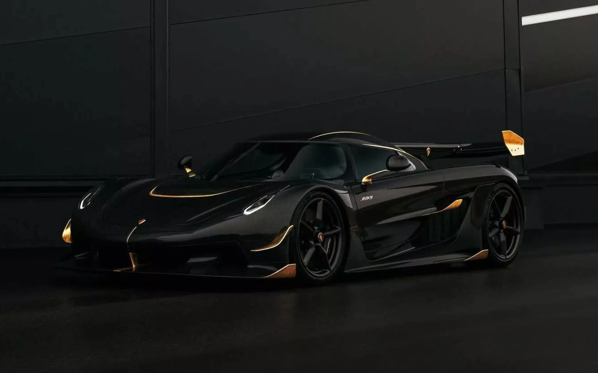
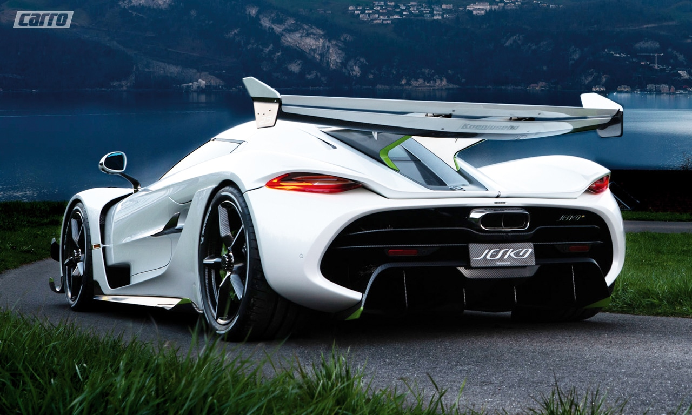
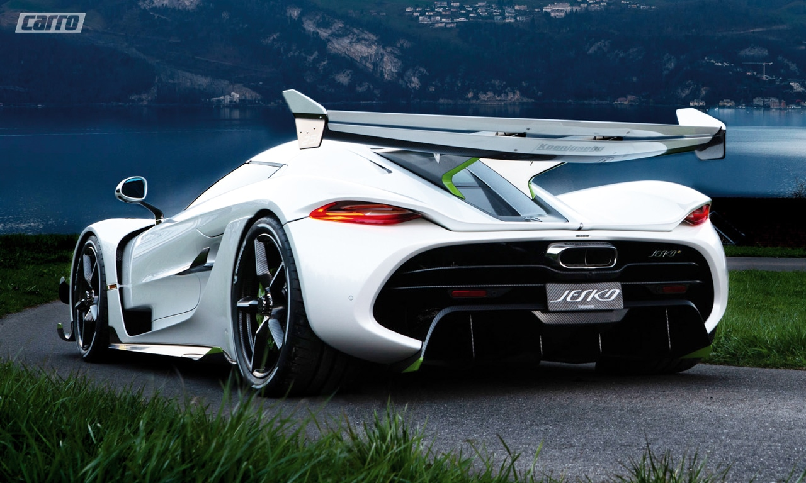
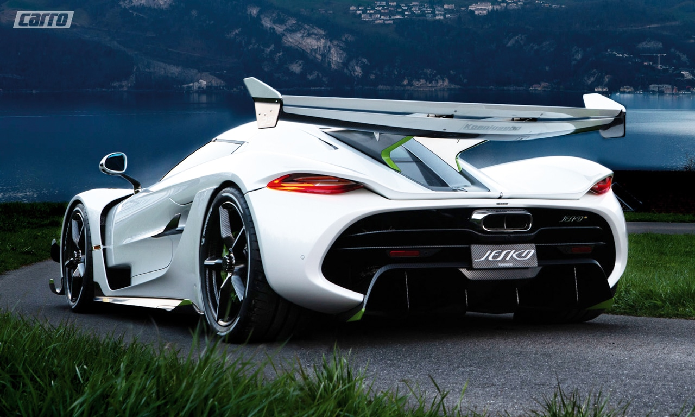

 


Jesko é um supercarro produzido pela fabricante automobilística sueca Koenigsegg. Apresentado no Salão Internacional do Automóvel de Genebra em 2019, o carro sucede o modelo Agera. O nome Jesko é uma homenagem ao pai do fundador da empresa, Jesko von Koenigsegg.O modelo foi construído principalmente como um carro de alto desempenho, com foco na aerodinâmica negativa e manobras mais precisas.